Government Museum in Mathura is well-known for the incredible art and architecture. It is famous for ancient sculptures of Mathura school of art dating from 3rd century to 12th century. This museum was founded in 1874 by Sir F.S Growse who was the collector of Mathura district. It is also known as the Archaeological Museum. The importance and beauty of the museum lies in the valuable things it contains that can be in terms of art, culture, scripts, currency, etc. It has great collection of sculptures which belongs to the Mathura school of art, several ancient coins, paintings, transcripts and other valuable things from all around the region of the period from 3rd century to 12th century.
Image Gallery of the Museum
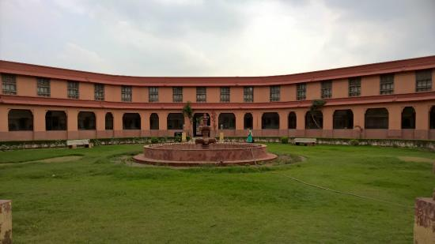 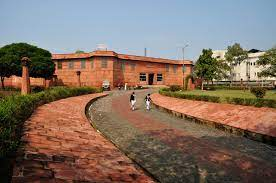 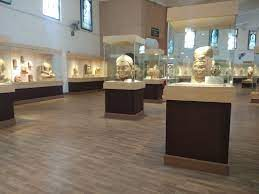 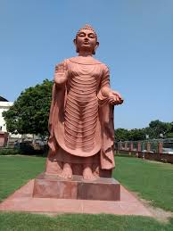 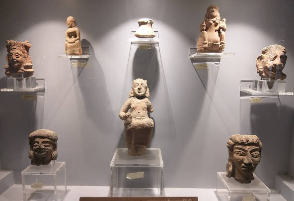 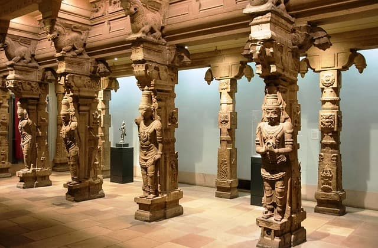 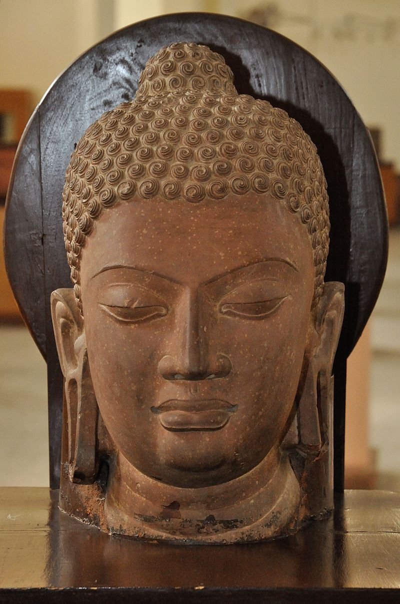 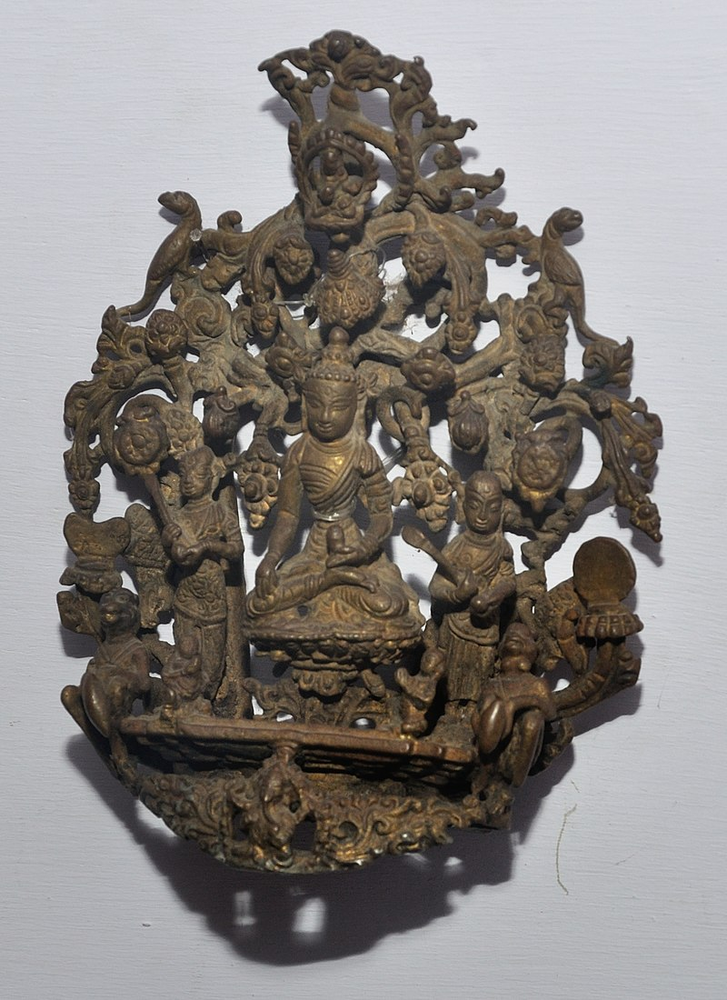 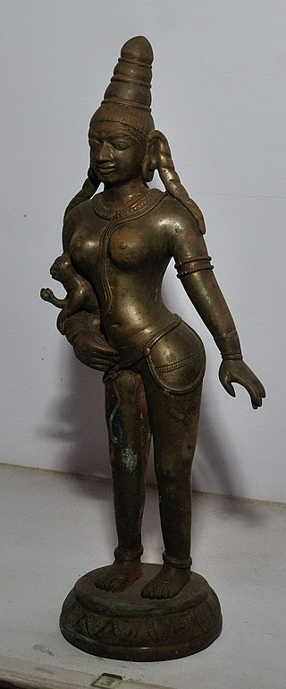 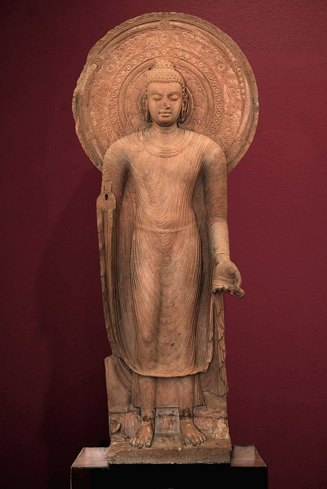 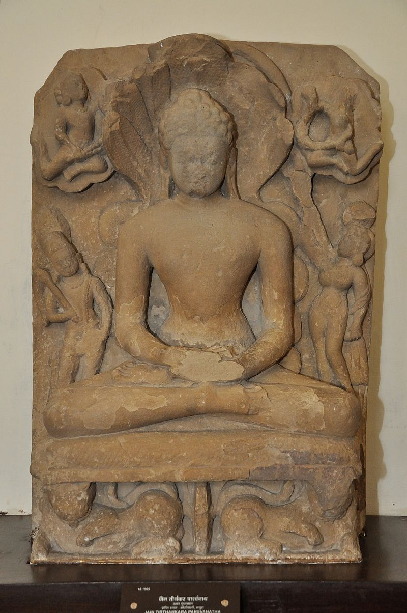
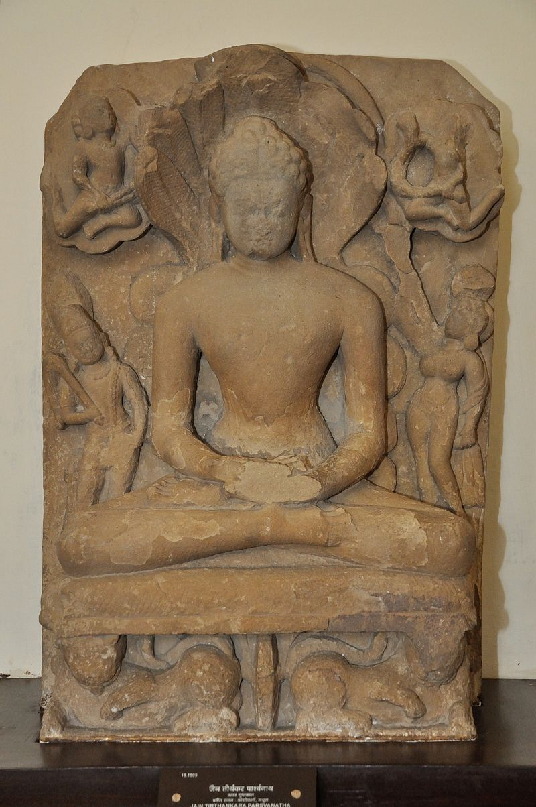
Entry fee for the museum
- 1. Rs. 5 per person for adult
- 2. Rs. 2 per person for children
- 3. Rs 25 per person for foreigners
- 4. Rs 20 for Camera Fee
This museum is situated at:- Dampier Nagar, Choubey Para, Mathura, Uttar Pradesh, 281001, India